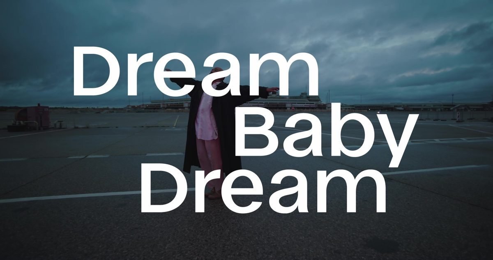

Sound for film
Next to his own films, Kris Limbach works on sound for other directors. For commercial and broadcast work see Kris Limbach Studios.
- DREAM BABY DREAM2025 · 20 min experimental short film made for Jazzfest Berlin 2025 with 60 Berlin participants · audio supervision: location recording, sound design and mix, in close work with the musicians, among them the Moabit Imaginarium ensemble · LIMINAL Dance Film Festival Washington D.C. (world premiere 2026), TANZRAUSCHEN Wuppertal, Moers Festival, Vancouver International Jazz Festival, Jazzfest Berlin (October 2026)
- Liebe, D-Mark und Tod2022 · dir. Cem Kaya · sound · Berlinale Panorama Audience Award
